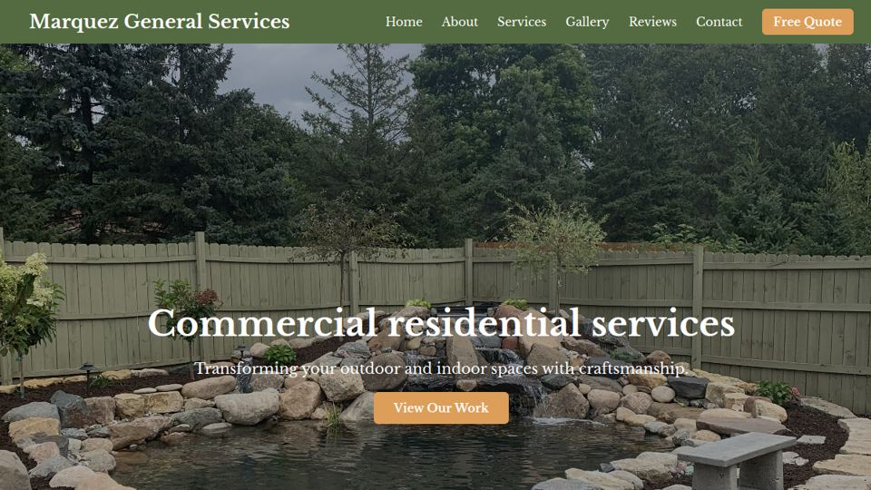
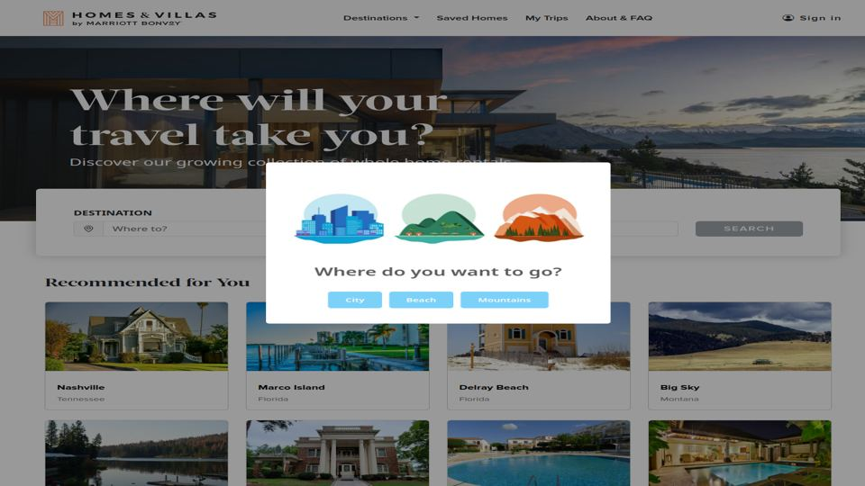

Understand people
Start with the need, the context, and the friction.
SOFTWARE ENGINEERING + DATA ANALYTICS · MINNESOTA
I'm Vanessa, a software engineering student building joyful, accessible digital experiences and growing a strong foundation in data analysis.
ABOUT ME
I pair analytical thinking with a human-centered approach to make technology feel clear, useful, and easy to navigate.
St. Cloud State University
B.S. Software Engineering
Expected May 2027
Career focus
Software Engineering
Data Analytics & Insight
3.68 GPA
Presidential Award, Spring 2024
Husky's Advance Leadership Track
HOW I BUILD
I like products that make people feel capable. My approach combines clear interactions, accessibility-minded details, and data-aware problem-solving.
Start with the need, the context, and the friction.
Build approachable interfaces that reward progress.
Use feedback and data to improve the next version.
SELECTED WORK
01
A personal business website created for my dad's landscaping company—bringing my web skills to a project that matters to my family.
This project gave me the chance to think beyond code and design for a real business, its services, and the people it needs to reach.

02
A student front-end project inspired by a hospitality booking experience, with a focus on intuitive browsing and user-centered design.
Applied user research and product analysis to identify choices that make travel discovery and booking flows feel clear and user-focused.

EXPERIENCE
My on-campus roles strengthened the same habits good software teams rely on: clear communication, careful problem-solving, feedback, and trust.
JAN 2025 — PRESENT
Collaborate with a residence-life team to support 250+ residents through communication, problem-solving, and community engagement.
NOV 2023 — PRESENT
Deliver reliable front-line service by resolving resident questions, protecting sensitive information, and supporting daily desk operations.
AUG 2026 — PRESENT
Keep package intake and distribution organized so students can receive deliveries reliably and questions are handled calmly.
CAPABILITIES
Engineering
HTML / CSS / JavaScript
Python / C++
Responsive Design
Data foundations
SQL / MySQL / SQL Queries
Data Modeling Basics
Requirements Analysis
Quality & collaboration
Debugging / Testing
Git / GitHub
Accessibility / DevTools
CONTACT